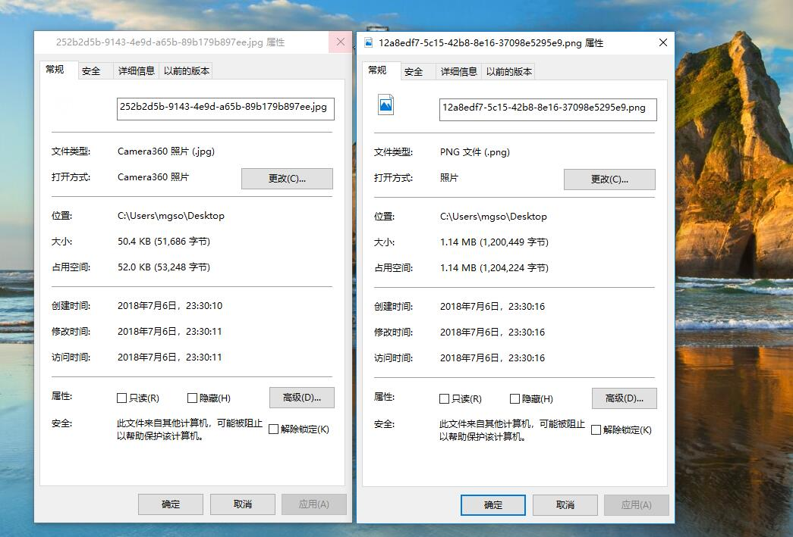

最近做私单遇到一个问题.客户觉得上传一张手机上的图片速度很慢.有时候甚至慢到timeout.于是要求前端做压缩
寻找了很多解决方案,大多数都是以舍弃高宽为基础从而实现压缩.但是这种做法无疑让图片受损.且若是身份证之类的证件
图片用这种压缩方式更不可取.于是乎找到一个近乎完美的解决方案.压缩图片质量而不是高宽
1 图片压缩
1
2
3
4
5
6
7
8
9
10
11
12
13
14
15
16
17
18
19
20
21
22
23
24
25
26
27
28
29
30
31
32
33
34
35
36
37
38
|
/**
* @param path 文件路径
* @param options 包含宽,高,质量
* @param callback 图片压缩后执行的回调函数
*/
function canvasDataURL(path, options, callback) {
var img = new Image();
img.src = path;
img.onload = function () {
var that = this;
// 默认按比例压缩
var w = that.width,
h = that.height,
scale = w / h;
w = options.width || w;
h = options.height || (w / scale); //默认等比压缩
var quality = 0.7; // 默认图片质量为0.7
//生成canvas
var canvas = document.createElement('canvas');
var ctx = canvas.getContext('2d');
// 创建属性节点
var anw = document.createAttribute("width");
anw.nodeValue = w;
var anh = document.createAttribute("height");
anh.nodeValue = h;
canvas.setAttributeNode(anw);
canvas.setAttributeNode(anh);
ctx.drawImage(that, 0, 0, w, h);
// 图像质量
if (options.quality && options.quality <= 1 && options.quality > 0) {
quality = options.quality;
}
// quality值越小，所绘制出的图像越模糊
var base64 = canvas.toDataURL('image/jpeg', quality);
// 回调函数返回base64的值
callback(base64);
}
}
|
其实从代码中我们可以显而易见地知道,压缩图片的整个过程其实就是将一张图片按照原有高宽用canvas进行重绘.并按照quality将canvas转成
base64输出
2 如何调用图片压缩函数
1
2
3
4
5
6
7
8
9
10
11
12
13
14
15
16
17
|
/**
* @param file 文件对象
* @param options 包含宽,高,质量
* @param callback
*/
function photoCompress(file, options, callback) {
var ready = new FileReader();
//开始读取指定的Blob对象或File对象中的内容.
//当读取操作完成时,readyState属性的值会成为DONE
// 如果设置了onloadend事件处理程序,则调用之.
//同时,result属性中将包含一个data: URL格式的字符串以表示所读取文件的内容.
ready.readAsDataURL(file);
ready.onload = function () {
var path = this.result;
canvasDataURL(path, options, callback)
}
}
|
这个函数是将一个图片对象通过FileReader对象加载,并将文件的path,options,callback传入canvasDataURL函数.
3 base64转Blob
1
2
3
4
5
6
7
8
|
function convertBase64UrlToBlob(urlData){
var arr = urlData.split(','), mime = arr[0].match(/:(.*?);/)[1],
bstr = atob(arr[1]), n = bstr.length, u8arr = new Uint8Array(n);
while(n--){
u8arr[n] = bstr.charCodeAt(n);
}
return new Blob([u8arr], {type:mime});
}
|
我们知道,一般上传文件都是上传的文件流即Blod.那么通过canvasDataURL处理后我们还需要讲得到的base64转成可供上传的流
3 完成整个压缩流程
上面两个函数其实可以当做一个函数处理.但是由于FileReader对象的onload是一个异步过程.所以这里进行了拆分.
photoCompress函数主要是将图片的路径获取出来,然后调用canvasDataURL对图片进行压缩
那应用到实际场景中的代码如下
1
2
3
4
5
6
7
8
9
10
11
12
13
14
15
16
17
18
19
20
21
22
23
24
25
26
27
28
29
30
31
32
33
34
35
36
|
var fileObj = document.getElementById("file").files[0]; // js 获取文件对象
var form = new FormData(); // FormData 对象
if(fileObj.size/1024 > 1025) { //大于1M，进行压缩上传
//这里我们仅对质量进行压缩,图片高宽默认等比
var compressOptions ={
quality: 0.2
}
photoCompress(fileObj, compressOptions,
function(base64Codes){
//console.log("压缩后：" + base.length / 1024 + " " + base);
var bl = convertBase64UrlToBlob(base64Codes);
form.append("file", bl, "file_"+Date.parse(new Date())+".jpg"); // 文件对象
/*
文件上传操作...
$.ajax({
url:'xxx',
method:'POST',
data:form
...
})
*/
});
}else{ //小于等于1M 原图上传
form.append("file", fileObj); // 文件对象
/*
文件上传操作...
$.ajax({
url:'xxx',
method:'POST',
data:form
...
})
*/
}
|
4 压缩效果
图片对比 :

文件大小对比 :

从图中可以看出压缩的效果还是挺不错的.当然在上传速度上也有很客观的变化.
END